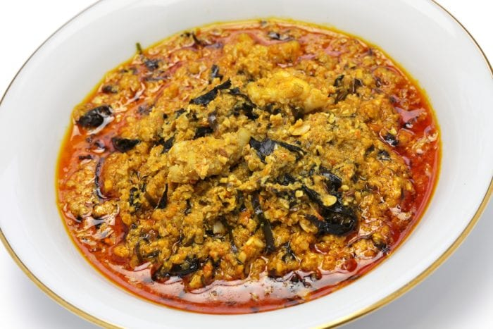

Egusi Soup

Egusi Soup is a popular Nigerian soup made with ground melon seeds (egusi), vegetables, and assorted meats, served with pounded yam, fufu, or eba.
Ingredients:
- 1 cup ground egusi (melon seeds)
- 2 cups assorted meats (beef, goat meat, or tripe)
- 2 cups spinach or ugu leaves (chopped)
- 2 tbsp palm oil
- 2 tbsp ground crayfish
- 1 tsp salt
Preparation Steps:
- Heat palm oil in a pot, add chopped onions, and fry for a few seconds.
- Add the ground egusi and stir continuously for a few minutes until slightly thickened.
- Pour in the meat stock and stir, allowing the egusi to cook properly.
- Add the assorted meats, crayfish, seasoning cubes, salt, and ground pepper, and cook for another 5 minutes.
- Stir in the chopped vegetables, cook for a few more minutes, and serve with pounded yam or fufu.
Back to Homepage